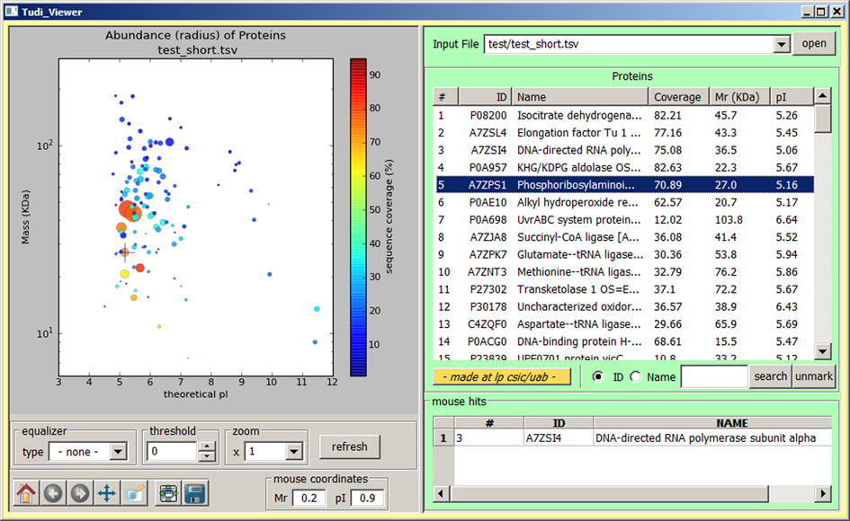
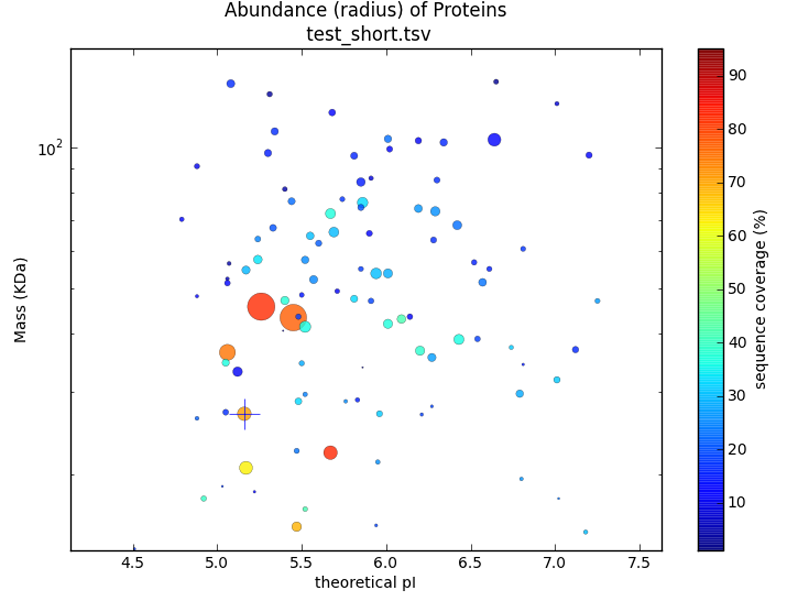
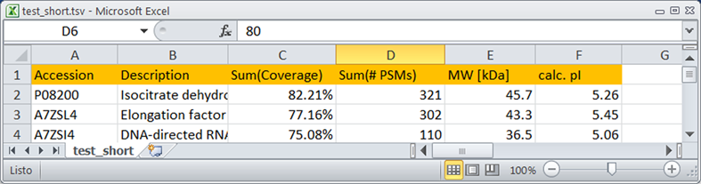

Table Of Contents:
Description
TUDIVIEWER is a tool for the
visualization of protein collections obtained from Thermo Protein
Discoverer.

Features
- Accepts .XLS, XLSX, CSV and TSV input files
- Represents, in 2D gel-like format, LCMSMS identification data
- Zooming of views
- Diverse transforms (log2, square root, square) to equalize
data in viewer.
- Search by protein accession or name

Installation
Tested in Windows XP 32 bits and Windows 7 64 bits.
Requirements
If you work with TudiViewer source you need Python installed (tested
with Python version 2.7.2) as well as the following dependencies:
- Matplotlib
- Pandas
- wxPython 2.8.11.2
- commons (from lpcsicuab googlecode
repository)
From Installer
- Download TudiViewer_x.y_setup.exe windows installer
from repository at the TudiViewer
project download page.
- Get your Password for the installer.
- Double click on the installer and follow the Setup Wizard.
- Run TudiViewer by double-clicking on the TudiViewer
short-cut in your desktop or from the START-PROGRAMS application
folder created by the installer.
From Source
- Install Python and third party software indicated in Dependencies.
- Download TudiViewer source code from its Mercurial
Source Repository.
- Download commons source code from its Mercurial
Source Repository.
- Copy the folders in python site-packages or in another folder
in the python path.
- Run TudiViewer
by double-clicking on the kblast_main.pyw module.
Source Dependencies:
Third-party program versions correspond to those used for the
installer available here. Lower versions have not been tested,
although they may also be fine.
Note for developpers: Installation from source requires
some small quirks in pandas modules. (TO BE COMPLETED).
Input
File Format
TudiViewer accepts, based in the corresponding file extensions,
files in XLS, XLSX, TSV and CSV formats
It works with Thermo Protein Discovered reports but the only
requierement is to provide the data in a file with at least six
columns of data and a header that will be used for the program to
recognize the column.
The headers for the different columns must be as follows (in any
order):

Download
You can download the last version of
TudiViewer here.
After downloading the binary installer, you have to
e-mail us at to get your free
password and unlock the installation program. The password is not
required to run the application from source code
Change-Log
1.0.0 September 2012
- First version.
- Uploaded first installer
To-Do
- - test
- - finish about/readme
- - upload executable
- - make accept less than five columns
Contribute
These programs are made to be useful. If you use them and don't
work entirely as you expect, let us know about features you think
are needed, and we will try to include them in future releases.